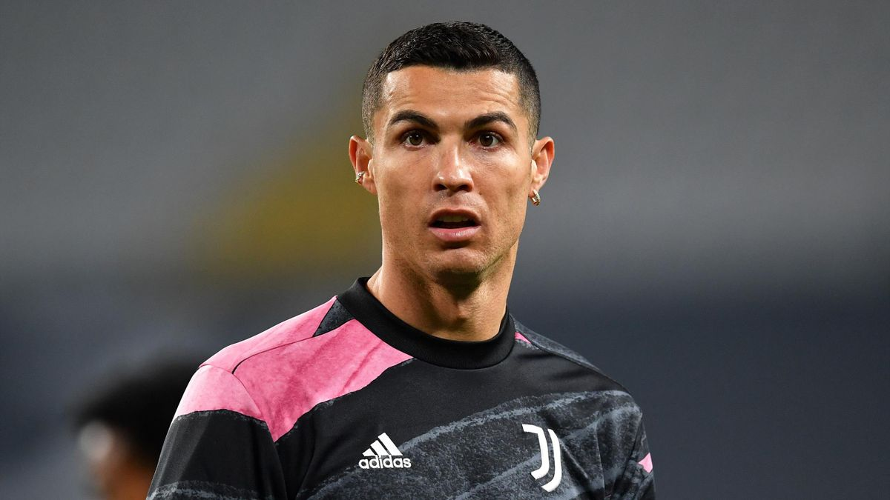
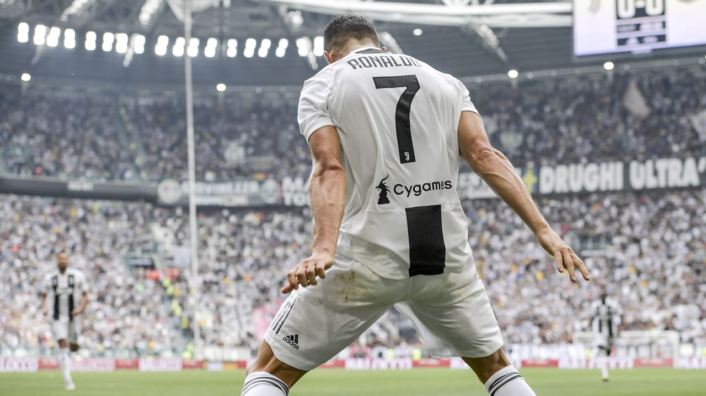

Смерть Ейсебіо на початку 2014 року шокувала всю Португалію. Роналду сприйняв трагедію особливо близько до серця. Перед матчем «Реал» – «Сельта», коли було оголошено хвилину мовчання на згадку про Ейсебіо, наш герой майже розплакався
Безумовно, він мав талант. Роналду додав до того, що було дано згори, години, дні, місяці й роки тренувань. Помітно додавши в м'язовій масі, він не втратив різкості та швидкості. Що дорогого варте
Роналду болісно самолюбний, завдяки чому, мабуть, і досяг усього, що має. Поразки як командні, і індивідуальні переживає важко. Прикладів – темрява, показові історії – поведінка португальця на церемонії вручення «Золотого м'яча».
Великий шанувальник класичного американського кіно батько хотів, щоб син був названий на честь Рональда Рейгана, популярного актора, згодом 40-го президента США
Народився 5 лютого 1985 року в муніципалітеті Фуншал, столиці автономного регіону Мадейра. Кріштіану — молодший син Марії Долореш душ Сантуш Авейру (Maria Dolores dos Santos Aveiro) і Жозе Дініша Авейру (Jose Dinis Aveiro). У віці восьми років він грав за любительську команду «Андоринья» («Andorinha»), де його батько відповідав за матеріальну базу для футболістів. 1995 року Роналду підписав контракт з клубом «Насіунал». За результатами сезону Кріштіану отримав запрошення на перегляд у лісабонський «Спортінг», після чого клуб з португальської столиці підписав з ним контракт.
Роналду став єдиним гравцем «Спортінга», який грав за юнацькі команди клубу до шістнадцяти, до сімнадцяти, до вісімнадцяти років, дублі «Спортінга» й основну команду за один сезон.

У 16 років футболістом зацікавився тренер англійського клубу «Ліверпуль» Жерар Ульє (Gerard Houllier), але клуб відмовився взяти Роналду, вирішивши, що португальцеві спершу слід розвинути свої футбольні навички. Влітку «Спортинг» зустрічався з «Манчестер Юнайтед». Вже після першого тайму здивовані грою Роналду гравці вмовили Фергюсона викупити Роналду. У тому матчі «Спортинг» переміг «Манчестер Юнайтед».
Уклавши контракт на суму в 11,24 мільйона фунтів стерлінгів, Роналду став першим португальцем за всю історію «Манчестер Юнайтед». Незважаючи, що сам Роналду попросив футболку з номером 28 (під цим номером він грав у «Спортінгу»), Фергюсон дав йому сьомий номер, вважаючи, що це стане додатковим джерелом мотивації для португальського футболіста — під номером 7 у Манчестері грали такі видатні спортсмени, як Джордж Бест, Браян Робсон, Ерік Кантона і Девід Бекхем.
Реал Мадрид
Ювентус
Реал Мадрид
Суперкубок Італії з футболу
З травня 2010 року Кріштіану зустрічався з російською моделлю Іриною Шейк. За даними BBC, весілля пари відбулося 12 липня 2012 року на Мадейрі на острові Порту Санту. У січні 2015 року, після того як Шейк не приїхала на церемонію вручення «Золотого м'яча», який Роналду і виграв, стало відомо, що пара розійшлась.
Кріштіану Роналду має сина, який народився 17 липня 2010 — як наслідок «знайомства однієї ночі» з неназваною американською офіціанткою. Знайомство Кріштіану з майбутньою матір'ю дитини відбулося в одному з ресторанів Лос-Анджелеса під час подорожі Роналду по США. Коли молода жінка виявила, що завагітніла, вона розшукала Роналду через свого агента Хорхе Мендеса. ДНК-тест довів батьківство. Строго віруюча римо-католицька сім'я Роналду без сумнівів вирішила усиновити дитину. Немовля назвали, як і батька — Кріштіану Роналду-молодший

Коли Кріштіану-старший буває у від'їзді, за дитиною наглядає його мати Долореш Авейру та сестри Ельма та Ліліана-Катя. 8 червня 2017 року народилися близнята Метью та Єва від сурогатної матері.12 листопада 2017 року народилася донька Алана Мартіна дос Сантос від подруги Криштіану, моделі Джорджини Родрігес.
У листопаді 2018 року Кріштіану Роналду і Джорджина Родрігес заручилися. Наприкінці серпня 2019 року футболіст склав заповіт, основною спадкоємицею стану в 300 млн євро в якому зазначена саме Джорджина. 20 листопада 2019 року з'явилися повідомлення про таємне весілля пари, шлюбна церемонія якої відбулася в Марокко. Роналду і Родрігес інформацію про весілля не підтвердили.